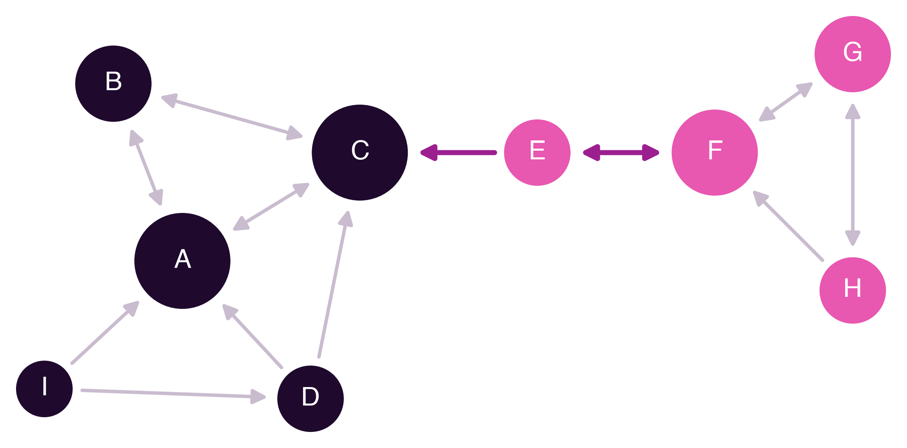

Appendix A — Worked Exercise: Metrics of a Class Network
Worked Exercise: Metrics of a Class Network
This appendix proposes an exercise on computing the position metrics presented in Section 3.3, applied to the class of nine students used as the example in that chapter. It is organised in three parts: the exercise, with the data and a table to fill in; the answers, to check the results; and the full step-by-step solution, showing how each value is obtained. It is advisable to try the exercise before reading the last two parts.
A.1 Exercise
The nine students of a class, identified by the letters A to I, were asked: “Which two classmates would you like to work with on the next group assignment?”. Each student made two choices, 18 in total. The adjacency matrix records these choices: the row shows who chooses and the column who is chosen (Table A.1).
| Chooses ↓ / Chosen → | A | B | C | D | E | F | G | H | I |
|---|---|---|---|---|---|---|---|---|---|
| A | 1 | 1 | |||||||
| B | 1 | 1 | |||||||
| C | 1 | 1 | |||||||
| D | 1 | 1 | |||||||
| E | 1 | 1 | |||||||
| F | 1 | 1 | |||||||
| G | 1 | 1 | |||||||
| H | 1 | 1 | |||||||
| I | 1 | 1 |
The sociogram draws the same data as a graph (Figure A.1).

The calculations use the following definitions, where n = 9 is the number of students, so each student has n − 1 = 8 classmates:
- Choices received: number of classmates who chose the student.
- Contacts: classmates connected to the student, in either direction. A reciprocal choice (double arrow) counts as a single contact.
- Distance: number of steps on the shortest path between two students, ignoring the direction of the arrows.
- Node density = contacts ÷ (n − 1) = contacts ÷ 8.
- Betweenness = number of pairs of classmates whose shortest path goes through the student ÷ 28. The 28 pairs come from 8 × 7 ÷ 2: they are all the pairs that can be formed with the other eight classmates. If a pair has two shortest paths and only one goes through the student, that pair counts ½.
- Closeness = (n − 1) ÷ sum of distances = 8 ÷ sum of the distances from the student to each of the other eight.
The task is to fill in the following table (Table A.2).
| Student | Choices received | Contacts | Node density | Betweenness | Closeness |
|---|---|---|---|---|---|
| A | |||||
| B | |||||
| C | |||||
| D | |||||
| E | |||||
| F | |||||
| G | |||||
| H | |||||
| I |
A.2 Answers
The completed table gives, for each metric, the fraction and the value rounded to two decimal places (Table A.3).
| Student | Choices received | Contacts | Node density | Betweenness | Closeness |
|---|---|---|---|---|---|
| A | 4 | 4 | 4/8 = 0.50 | 4/28 ≈ 0.14 | 8/17 ≈ 0.47 |
| B | 2 | 2 | 2/8 = 0.25 | 0/28 = 0.00 | 8/19 ≈ 0.42 |
| C | 4 | 4 | 4/8 = 0.50 | 16.5/28 ≈ 0.59 | 8/14 ≈ 0.57 |
| D | 1 | 3 | 3/8 ≈ 0.38 | 2.5/28 ≈ 0.09 | 8/18 ≈ 0.44 |
| E | 1 | 2 | 2/8 = 0.25 | 15/28 ≈ 0.54 | 8/15 ≈ 0.53 |
| F | 3 | 3 | 3/8 ≈ 0.38 | 12/28 ≈ 0.43 | 8/18 ≈ 0.44 |
| G | 2 | 2 | 2/8 = 0.25 | 0/28 = 0.00 | 8/24 ≈ 0.33 |
| H | 1 | 2 | 2/8 = 0.25 | 0/28 = 0.00 | 8/24 ≈ 0.33 |
| I | 0 | 2 | 2/8 = 0.25 | 0/28 = 0.00 | 8/23 ≈ 0.35 |
A.3 Step-by-Step Solution
A.3.1 Step 1: choices received
In the matrix, add up the 1s in each student’s column. In the sociogram, the same value is obtained by counting the arrowheads that reach the student (Table A.4).
| Student | Chosen by | Choices received |
|---|---|---|
| A | B, C, D, I | 4 |
| B | A, C | 2 |
| C | A, B, D, E | 4 |
| D | I | 1 |
| E | F | 1 |
| F | E, G, H | 3 |
| G | F, H | 2 |
| H | G | 1 |
| I | nobody | 0 |
As a check, the choices received must add up to the total number of choices made: 4 + 2 + 4 + 1 + 1 + 3 + 2 + 1 + 0 = 18.
A.3.2 Step 2: contacts and node density
To find a student’s contacts, combine the classmates the student chooses (their row in the matrix) with the classmates who choose them (their column). Anyone who appears in both lists counts only once, because a reciprocal choice is a single contact. Node density is the number of contacts divided by 8 (Table A.5).
| Student | Chooses | Chosen by | Contacts (no repeats) | No. of contacts | Node density |
|---|---|---|---|---|---|
| A | B, C | B, C, D, I | B, C, D, I | 4 | 4 ÷ 8 = 0.50 |
| B | A, C | A, C | A, C | 2 | 2 ÷ 8 = 0.25 |
| C | A, B | A, B, D, E | A, B, D, E | 4 | 4 ÷ 8 = 0.50 |
| D | A, C | I | A, C, I | 3 | 3 ÷ 8 ≈ 0.38 |
| E | C, F | F | C, F | 2 | 2 ÷ 8 = 0.25 |
| F | E, G | E, G, H | E, G, H | 3 | 3 ÷ 8 ≈ 0.38 |
| G | F, H | F, H | F, H | 2 | 2 ÷ 8 = 0.25 |
| H | F, G | G | F, G | 2 | 2 ÷ 8 = 0.25 |
| I | A, D | nobody | A, D | 2 | 2 ÷ 8 = 0.25 |
Two cases help to clarify the difference between arrows, choices and contacts. Student A chooses B and C and is chosen by B, C, D and I; in the sociogram six arrows touch A, but those linking A to B and to C are double, so, combining without repeats, there are four contacts: B, C, D and I. Student D was chosen only once, by I, but has three contacts, because D also chose A and C: contacts count connections in both directions, whereas choices received only count those that arrive.
A.3.3 Step 3: distances and closeness
To find a student’s distances to all classmates, proceed in layers: the student’s contacts are 1 step away; the contacts of those not yet counted are 2 steps away; and so on, until all eight classmates are reached. The direction of the arrows is ignored.
For student C, the process is as follows:
- At 1 step are C’s contacts: A, B, D and E.
- At 2 steps are their contacts not yet counted: I, through A or D, and F, through E.
- At 3 steps are F’s contacts not yet counted: G and H.
The sum of the distances is 1 + 1 + 1 + 1 + 2 + 2 + 3 + 3 = 14, and C’s closeness is 8 ÷ 14 ≈ 0.57.
Repeating the process for each student gives the distance table (Table A.6). Each row gives the distances from one student to the others; the table is symmetric, because the direction of the arrows does not count.
| A | B | C | D | E | F | G | H | I | Sum | Closeness | |
|---|---|---|---|---|---|---|---|---|---|---|---|
| A | − | 1 | 1 | 1 | 2 | 3 | 4 | 4 | 1 | 17 | 8 ÷ 17 ≈ 0.47 |
| B | 1 | − | 1 | 2 | 2 | 3 | 4 | 4 | 2 | 19 | 8 ÷ 19 ≈ 0.42 |
| C | 1 | 1 | − | 1 | 1 | 2 | 3 | 3 | 2 | 14 | 8 ÷ 14 ≈ 0.57 |
| D | 1 | 2 | 1 | − | 2 | 3 | 4 | 4 | 1 | 18 | 8 ÷ 18 ≈ 0.44 |
| E | 2 | 2 | 1 | 2 | − | 1 | 2 | 2 | 3 | 15 | 8 ÷ 15 ≈ 0.53 |
| F | 3 | 3 | 2 | 3 | 1 | − | 1 | 1 | 4 | 18 | 8 ÷ 18 ≈ 0.44 |
| G | 4 | 4 | 3 | 4 | 2 | 1 | − | 1 | 5 | 24 | 8 ÷ 24 ≈ 0.33 |
| H | 4 | 4 | 3 | 4 | 2 | 1 | 1 | − | 5 | 24 | 8 ÷ 24 ≈ 0.33 |
| I | 1 | 2 | 2 | 1 | 3 | 4 | 5 | 5 | − | 23 | 8 ÷ 23 ≈ 0.35 |
The smaller the sum, the closer the student is to everyone and the higher their closeness. G, H and I are at the edges of the network: they need up to five steps to reach a classmate.
A.3.4 Step 4: betweenness
Leaving out the student, the other eight classmates form 8 × 7 ÷ 2 = 28 pairs; each pair counts once, because the pair A-B is the same as the pair B-A. For each pair, check whether the shortest path between the two goes through the student: if it does, the pair counts 1; if there are two shortest paths and only one goes through the student, it counts ½. Betweenness is the total divided by 28. Going through all 28 pairs for each of the nine students would be slow, but three observations make the calculation quick.
Who has zero betweenness. If all of a student’s contacts are connected to each other, nobody needs to go through that student, because there is always an equally short or shorter path that avoids them. This applies to four students:
- B, whose contacts, A and C, are connected to each other;
- G, whose contacts, F and H, are connected to each other;
- H, whose contacts, F and G, are connected to each other;
- I, whose contacts, A and D, are connected to each other.
The betweenness of B, G, H and I is therefore 0.
The bridges. When a student is the only passage between two parts of the network, every pair with one member on each side goes through that student, and it is enough to multiply the number of students on each side:
- E separates {A, B, C, D, I} from {F, G, H}: 5 × 3 = 15 pairs, so the betweenness is 15 ÷ 28 ≈ 0.54;
- F separates {A, B, C, D, E, I} from {G, H}: 6 × 2 = 12 pairs, so the betweenness is 12 ÷ 28 ≈ 0.43;
- C separates {A, B, D, I} from {E, F, G, H}: 4 × 4 = 16 pairs. There is also the pair B-D, which has two shortest paths, B-A-D and B-C-D, of which only one goes through C, so it counts ½. The total is 16 + ½ = 16.5, and the betweenness is 16.5 ÷ 28 ≈ 0.59.
The cases with halves. To go from I to C, E, F, G or H there are always two equally short paths, one through A and the other through D (for example, I-A-C and I-D-C). Each of these five pairs counts ½ for A and ½ for D.
- For A, the pair B-I counts 1, because the only shortest path is B-A-I; the pair B-D counts ½ (B-A-D or B-C-D); the pairs C-I, E-I, F-I, G-I and H-I count ½ each, that is, 5 × ½ = 2.5. The total is 1 + ½ + 2.5 = 4, and the betweenness is 4 ÷ 28 ≈ 0.14.
- For D, only the pairs C-I, E-I, F-I, G-I and H-I count, with ½ each. The total is 5 × ½ = 2.5, and the betweenness is 2.5 ÷ 28 ≈ 0.09.
A.3.5 What the results show
Read together, the values in Table A.3 support a few conclusions:
- A and C are the most chosen students, with four choices each, and the ones with the most contacts.
- C is the most central in betweenness and closeness: C sits in the middle of the network, a few steps from everyone, and connects the larger group to E.
- E has only two contacts, but comes second in betweenness and closeness: without E, the two groups would be disconnected. Being popular and acting as a bridge are different positions in a network.
- I was chosen by nobody, but is not isolated: I has two contacts, because I chose A and D.